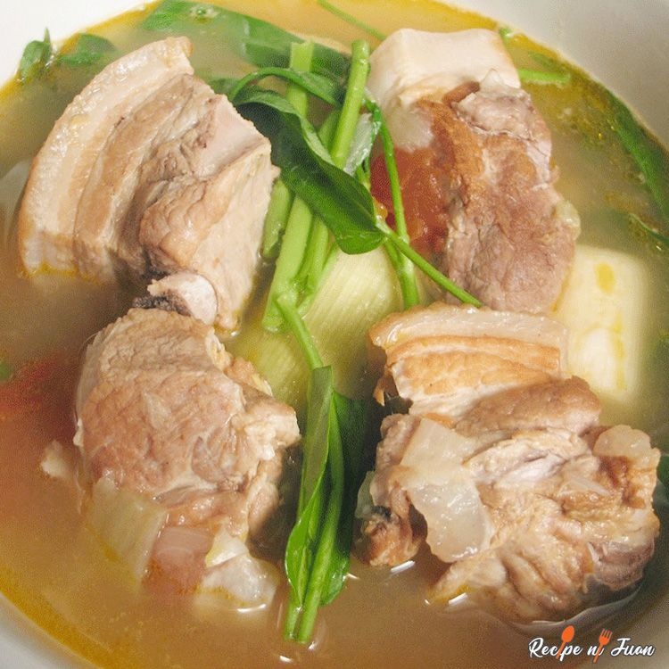

Sinigang

Description
Sinigang is a sour soup native to the Philippines.
This uses pork as its main ingredient and the
quality of the disk depends on the souring agent.
Another plus to delicious pork Sinigang is how easy
it is to prepare.
Ingredients
- 2 lbs pork belly
- 1 bunch spinach
- 3 tablespoons fish sauce
- 12 pieces string beans
- 2 pieces tomato
- 3 pieces chili
- 1 tablespoon cooking oil
- 2 quarts water
- 1 piece onion
- 2 pieces taro
- 1 pack sinigang mix
Steps
- Heat the pot and put-in the cooking oil
- Saute the onion until its layers separate
from each other
- Add the pork belly and cook until outer part
turns light brown
- Put in the fish sauce and mix with the
ingredients
- Pour the water and bring to a boil
- Add the taro and tomatoes then simmer for 40
minutes or until pork is tender
- Put in the sinigang mix and chili
- Add the string beans (and other vegetables
if there are any) and simmer for 5 to 8 minutes
- Put in the spinach, turn off the heat, and cover
the pot. Let the spinach cook using the remaining
heat in the pot.
- Serve hot. Share and enjoy!